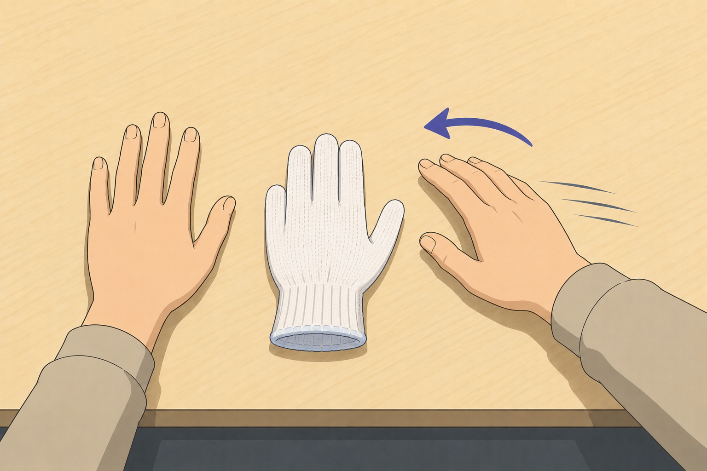

山近 星弥
Seiya Yamachika
Undergraduate Researcher
VR・Human-Computer Interaction・身体所有感覚
Virtual Reality · Human-Computer Interaction · Body Ownership Illusion
研究を見る View Research
VR・Human-Computer Interaction・身体所有感覚
Virtual Reality · Human-Computer Interaction · Body Ownership Illusion
研究を見る View Research現在は、身体位置感覚の較正を利用したラバーハンドイリュージョン（RHI）の 新たな評価指標について研究しています。
I am currently researching a novel evaluation method for the Rubber Hand Illusion (RHI) based on body position recalibration.

VR・身体所有感覚・Human-Computer Interaction を中心に研究しています。
My research interests include Virtual Reality, Human-Computer Interaction and Body Ownership Illusion.

日本バーチャルリアリティ学会 2026
詳しく見る → Read More →